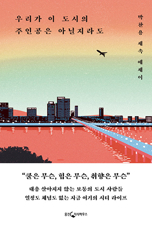

7
어떤 사람은 주인공 되기라는 도시형 게임의 법칙을 거부하기도 한다. 힘드니까. 미래의 주인공이 된다는 목표 대신 순간이 즐거우면 된다는 목표를 채운다면 삶의 장르가 완전히 달라진다. 놀기 위해 살면 된다. 욜로, 한 달 살기, 퇴사하고 싶다, 하마터면 열심히 히 살 뻔했다, 이런 식의 유행들은 주인공 게임에 질린 사람들의 지친 마음이 반영된 결과라고 생각한다.
9
크레이지 셰프 같은 면모는 전혀 없는 학자풍의 오너 셰프 하인츠 라이트바우어가 내 앞에서 조용하게 해준 말이 아직 기억난다. "랭킹 같은 것에 연연하지 않아요. 계속 인내하며 우리의 일을 할 수 있는 한 가장 좋은 방법으로 해나갈 뿐입니다. 그러면 다른 것들이 따라옵니다. 남의 평가 같은 걸 계속 생각할 수는 없어요." 나는 더 물었다. 미쉐린의 별 두 개가 중요하지 않다는 건지. "그것에 대해 항상 생각하지 않는 게 중요합니다. 별을 가진 건 좋은 일이죠. 하지만 내 부엌에서 어떤 일을 하는지, 내 팀과 내 파트너와 다음 단계로 할 일은 무엇인지, 이걸 생각하는 게 더 중요합니다." 이 말을 듣자 내 생각이 틀린 것만은 아니구나 싶었다.
10
미쉐린의 별을 받은 레스토랑은 물론 훌륭하겠지만 그 도시에서 가장 중요한 장소는 아닐 것이다. 그게 무슨 상관이람. 나만의 과제가 가장 중요하다.
29
회사가 무조건 좋은 곳은 아니다. 다만 회사 밖은 회사보다 험하고 지금 회사를 떠난다 해도 더 괜찮은 일을 할 수 있지 않음을 이제는 알 뿐이다.
99
접객은 한국형 힙스터 업계 사람들이 그렇듯 멋만 부리고 미숙했다. 무알코올 맥주도 갖다두지 않은 주제에. 나는 여기서도 뜨거운 아메리카노를 먹었다.
105
서울도 세련된 동네의 연대기를 꿸 수 있다. 1990년대 후반의 홍대 앞부터 지금의 익선동이나 우사단로까지. 흐름이 바뀌면 사람이 모이고 사람이 모이면 돈이 오가며 돈이 오가면 비겁한 사람과 상처받은 사람이 생긴다. 요즘은 이 순환을 젠트리피케이션이라고 부른다.
127
서점 판타지를 가진 사람들은 츠타야에 대해 몇가지를 착각하고 있다. 하나. 취향은 쉽게 만들어지지 않는다. 일본은 2차 세계대전 종전 이후로도 50년에 가까운 호황을 누렸다. 취향은 잉여 시간과 노력의 결과이기 때문에 전 사회적인 취향의 풀이 생기려면 전 사회적인 호황이 반드시 필요하다.
둘. 일본 같은 시장은 전 세계에 일본뿐이다. 일본은 아직도 정보를 얻으려면 출판물을 돈 주고 사야 한다는 사회적 합의가 튼튼한 나라다. 스마트폰의 네이버 앱만 누르면 웬만한 정보를 다 얻을 수 있는 한국과 근본적인 차이가 있다.
셋. 츠타야는 서점이라는 공간도 패션화시켰다. 츠타야는 자리만 차지하는 딱딱한 책이 없다. 이들은 소비를 촉진시키는 카탈로그 같은 책만 판다. 서점이지만 책 이외의 각종 상품을 갖고 싶을 정도로 예쁘게 만들어낸다. 서점이라는 공간과 책이라는 상품을 한없이 팬시하게 만들어 파는게 츠타야 스타일이다. 츠타야 같은 서점이 하나있으면 신선하다. 하지만 모든 서점이 츠타야처럼 되면 곤란하다.
128
명예와 모객. 서점 비지니스의 본질이자 미래다
임 대표는 더 북 소사이어티를 운영하며 서점 비지니스의 본질은 취향 공동체를 만들고 운영하는 일임을 깨달았다. 그는 계속 서점 공간을 이용한 행사를 개최했다. 낭독회, 퍼포먼스, 독자와 작가가 만날 수 있는 기회, 그게 뭐가 됐든 간에.
140
"베끼는 건 같이 망하는 거예요." 정현주의 말은 업종을 넘어서 멋있는 걸 해보고 싶어 하는 모든 사람들이 귀담아들을 필요가 있다. "자기만의 것을 만들고, 그걸로 사람들에게 승부해야죠. 그렇지 않으면 서적 도매상 좋은 일을 할 뿐이에요."
141
김병기는 좋은 커피를 만들고 좋은 직장을 만들려 했을 뿐인데, 그걸 잘했기 때문에 프릳츠는 서울의 명소가 되었다.
164
어떤 사람들은 창작이나 예술을 우발적인 일이라 여긴다. 소나기처럼 갑자기 떨어지는 영감을 받아야 뭔가가 되는 것처럼 보일지도 모른다. 실제의 창작은 A 타일과 B 타일이 만나는 면을 매끄럽게 마무리하는 일에 가깝다. 지루하고 열악하고 당장은 잘 티도 나지 않는 일을 계속해야 뭔가가 완성된다. 공예적 완성도는 생각보다 훨씬 중요하다.
168
고급 모데나 발사믹 식초는 식초계의 페라리...라는 비유는 경박해 보이지만 속을 들여다보면 실로 어느 정도 그렇다. 둘 다 재료를 듬뿍 쓰고 시간을 아끼지 않으며 그만큼 값도 비싸게 부른다. 이건 이른바 명품이라고 하는 고가 소비재 전반의 특성이기도 하다.